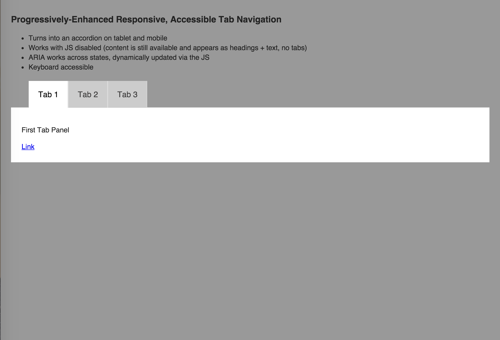

Mobile Phones!


Things my phone can do vs. things I need: a Venn diagram
Things my phone can do
- Connect to the Internet
- Play Games
- Take photos
- Go into airplane mode
- Text Message
- Buy things
- Play music
- Hang up on people
- Lag
- Fall apart
- Freeze
- Cost Money
Things I need my phone to do:
- Make phone calls
- Work correctly
Mobile Web Accessibility for Developers
Marcy Sutton, Seattle, USA
Accessibility Engineer at Adobe, Angular Core Team Member
Do you use a mobile screen reader more than a desktop screen reader?

| Response | # of Respondents | % of Respondents |
|---|---|---|
| No | 753 | 56% |
| About the same | 432 | 32% |
| Yes | 160 | 12% |
Mobile++

Mobile Platform Usage

iOS Accessibility
Features
- Voiceover
- Dictation
- Zoom
- Invert colors/grayscale
- Switch control
Android Accessibility
Features
- TalkBack
- Switch access
- Braille support
- High contrast
- Magnification
Let’s talk about:
- Barriers
- State of Tooling
- UI Patterns
Barriers
to Access
Accessibility Barriers
- Visual clutter
- Everything’s too small
- Ambiguous visual icons
Accessibility Barriers (moar)
- Locked-down zoom
- Conflicting gestures
- Hijacked scrolling
Spotty AT* Support
Mobile is less mature than desktop
*AT = Assistive technology
Fragmentation

Mobile Contexts
- Native
- Hybrid
- Mobile web
Accessibility is easier to get right on native platforms.
¯\_(ツ)_/¯
Mobile Web Accessibility: Come at me Bro
State of Tooling
iOS Safari with Web Inspector


Firefox WebIDE

Chrome for Android

That's cool but...
We’re in desperate need of better mobile web accessibility testing tools.
Tenon.io
viewPortWidth
viewPortHeight
uaString
Mobile UI Patterns
You’re competing…

BBC Mobile Accessibility Guidelines
Touch targets

Use buttons*

HTML Source & Tab Order
Avoid tabindex hacks

Reachable tabindex on mobile (yikes)
Disabled tabindex on mobile (yay)
How to disable offscreen content
display: none;Disabling with CSS
visibility: hidden
Disabling with HTML
aria-hidden="true"tabindex="-1"hidden
Responsive Tabs to Accordion

We need UIs that work for all mobile web users.
Let’s Recap
- We need testing tools
- Optimize for humans
- Use semantics
- Craft source & tab order
- Make UI components respond
- Simplify!
Don't give up on mobile web accessibility.
Resources
All links open in new windows